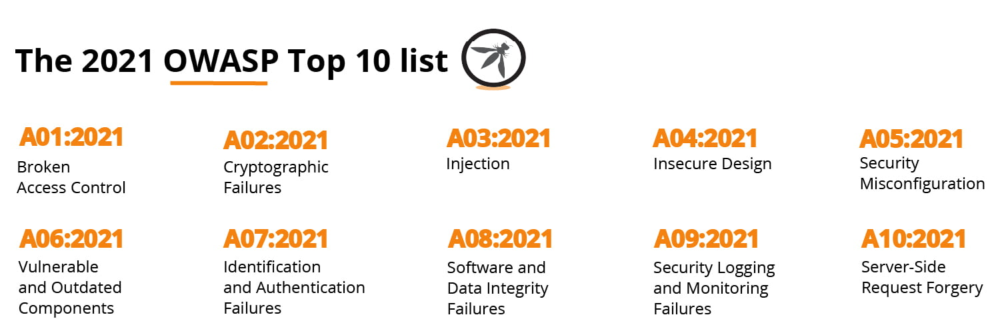
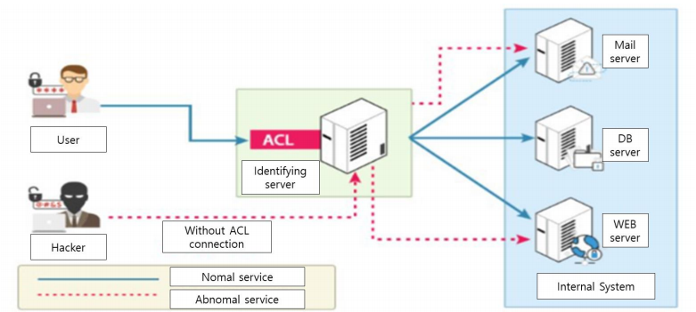
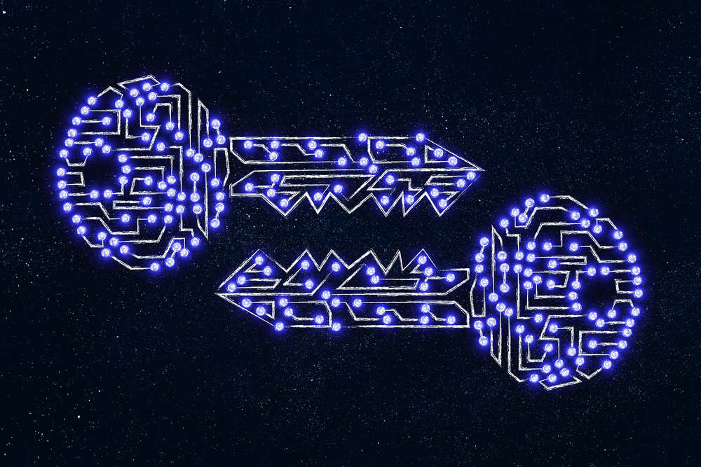
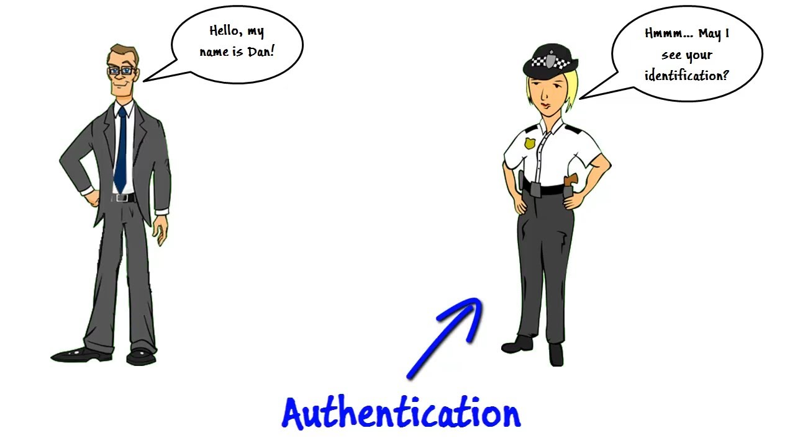

Presentation about OWASP top 10
Stands for abbreviation
- Open
- Web
- Application
- Security
- Project
This is a rating of 10 most critical security concerns for web application.

A01:2021 – Broken Access Control

Broken Access Control - when a user can perform operations that are
prohibited for him. These failures can lead to information opening or data loss.
Basic requirement to prevent
- Except for public resources, deny by default.
- User can't create, read, update, or delete any record.
- Log access control failures, alert admins
- Rate limit API and controller access
A02:2021 – Cryptographic Failures

Cryptographic Failures - lack of encryption or possible problems with encryption
Basic requirement to prevent
- Using a secure URL.
- Using strong and unique passwords.
- Encryption of all sensitive information that needs to be kept.
Injection - A hacker injects a query or
command to insert data and forces the application to do something it was not designed to do.
Basic requirement to prevent
- Use of a safer API that eliminates the use of an interpreter.
- Use LIMIT and other SQL controls
- Use positive server-side input validation.
A04:2021 – Insecure Design
Insecure Design - representing various deficiencies expressed as “missing or ineffective
management design”.
Basic requirement to prevent
- Limit resource consumption by a user or service..
- Create and use a library of safe design patterns or prebuilt components
- Integrate security language and controls in the user story.
A05:2021 – Security Misconfiguration
Security Misconfiguration - may include unintentionally exposed services or ports, outdated or
unpatched frameworks or stack
Basic requirement to prevent
- Remove or do not install unused features and frameworks.
- Sending security directives to clients, e.g., Security Headers.
- An automated process to verify the effectiveness of the configurations and settings.
A06:2021 – Vulnerable and Outdated Components
Vulnerable and Outdated Components - outdated components refer to standard software that is
used to support an application, but which has
not been updated and is therefore at an “old” version known to contain vulnerabilities.
Basic requirement to prevent
- Remove unused dependencies, unnecessary features, components, files.
- Only obtain components from official sources over secure links.
A07:2021 – Identification and Authentication Failures

Identification and Authentication Failures - authentication is not implemented correctly, or
the application may
contain routes to sensitive data that were not properly protected by the authentication barrier
Basic requirement to prevent
- Using multi-factor authentication
- Add weak password checking
- Limit failed login attempts
A08:2021 – Software and Data Integrity Failures
Software and Data Integrity Failures - relate to code and infrastructure that does not protect
against integrity violations.
Basic requirement to prevent
- Use digital signatures or similar mechanisms
- Ensure libraries and dependencies,
such as npm or Maven, are consuming trusted repositories.
- Ensure that your CI/CD pipeline has proper segregation,
configuration, and access control to ensure the integrity of the code
A09:2021 – Security Logging and Monitoring Failures
Security Logging and Monitoring Failures -including whether a system correctly
audits security events such as logins and failed logins.
Basic requirement to prevent
- Ensure log data is encoded correctly to prevent injections
- DevSecOps teams should establish effective monitoring and alerting
- Ensure that logs are generated in a format that log management
A10:2021 – Server-Side Request Forgery (SSRF)
Server-Side Request Forgery - is a type of attack that allows an attacker to send requests from the server.
Basic requirement to prevent
- Enforce the URL schema, port, and destination with a positive allow list
- Do not send raw responses to clients.
- Disable HTTP redirections